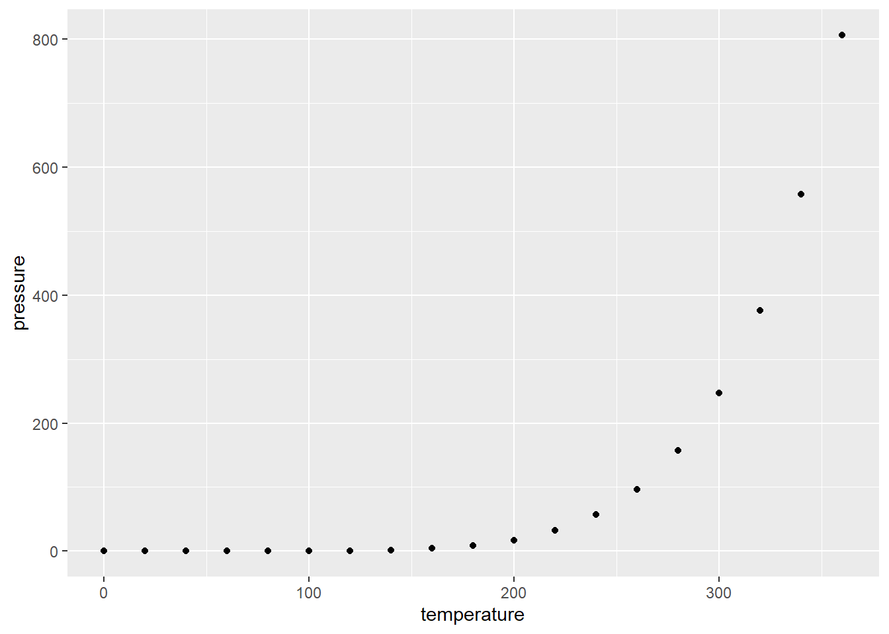
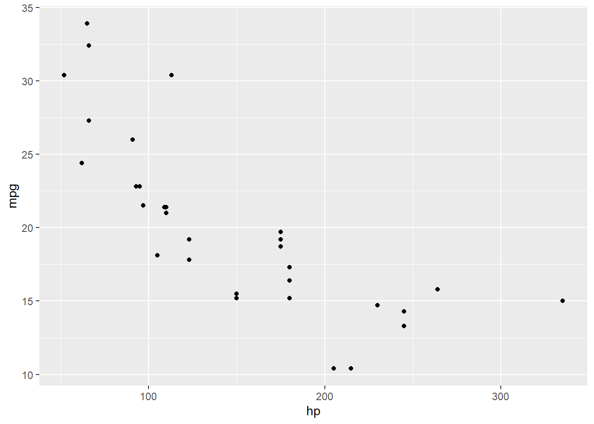

Formula 1 Fanatics
Formula 1: Analyzing F1 Beyond the Track
Introduction
Our blog delves into the world of Formula 1 (F1), the pinnacle of international racing, by offering a fun and interactive take on its analytics. We explore the sport’s rich history and performance from years 1950-2024 through visualizations, including word clouds, network graphs, and interactive maps. This is for both F1 enthusiasts and curious newcomers alike!
Purpose:
Background & Data:
Grand Prix Circuits
Locations of Grand Prix circuits from 1950-2024
Quarto website features
Including images or gifs
Panel tabsets
Use the following format to add information or tables or visualizations in tabset panels.
F1 Team Podiums (1st - 3rd) and Wins (1st) since 1950
Some information in a different tab
Panel layouts for content
Use the following format to have more control over the panel layout of various components.
The syntax “[ [1], [1,1] ]” indicates that we have three pieces of content that we want to spread across two rows. The first piece of content will be in its own row, and then the next two components will be split across two columns of equal width in a second row.
Row 1 with only one output
Some content
First column of row 2
Some other content
Second column of row 2
Some additional content.
The values provided within each row specify the relative widths of the content within that row. For example “[1,2,1]” would create a row with 3 columns where the first and third columns are the same width and the middle column is twice as wide.
Headings are not required to indicate the start of a new component. The linked section, for example, shows the use of custom layouts for a series of imported figures. Block layouts provide alternative ways to divvy up content.
Layouts for tables and visualizations produced by code chunks
For details on how to layout subfigures from multiple graphs produced by the same code chunk, see the examples in the Knitr tabs of the sections on figure layouts, subcaptions, and custom layouts.
The same syntax shown across the linked examples can be used to create subtables by replacing fig-cap and fig-subcap with tbl-cap and tbl-subcap.
Two examples in Table 1 and Figure 1 below are borrowed and slightly modified from the linked sections.
| speed | dist |
|---|---|
| 4 | 2 |
| 4 | 10 |
| 7 | 4 |
| temperature | pressure |
|---|---|
| 0 | 0.0002 |
| 20 | 0.0012 |
| 40 | 0.0060 |



References
CODER, R. (2024), R CHARTS: Interactive maps with leaflet in r.
Patrik_P (2017), “Creating a leaflet map with custom labels in r,” Stack Overflow, Forum post, Available at https://stackoverflow.com/questions/45538831/creating-a-leaflet-map-with-custom-labels-in-r.